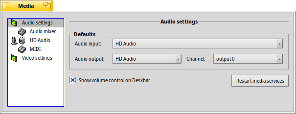

| Tabele |
|
Impostazions audio Mixer audio HD audio MIDI Impostazions video |
 Multimedia
Multimedia
| Deskbar: | ||
| Posizion: | /boot/system/preferences/Media | |
| Impostazions: | ~/config/settings/Media/* ~/config/settings/System Audio Mixer ~/config/settings/MediaPrefs Settings - Al archivie la posizion dal barcon dal panel. |
Lis preferencis Multimedia a controlin lis impostazions audio e video dal sisteme. Chestis a spaziin da lis ativitâts cuotidianis come regolâ il volum, a finiduris avonde di bas nivel che a la plui part dai utents no ur covente. Lis variis impostazions a son metudis dongje in categoriis.
 Impostazions audio
Impostazions audio

Tal câs che il to computer al vedi plui di une interface audio, tu puedis sielzi la , e cuâl doprâ. Tal câs râr che alc al fasi lâ fûr dai binaris il sisteme audio/video, prove .
Cu la casele di selezion tu puedis ativâ . Chest al zonte une piçule icone ae guantiere dal Deskbar:

Un clic di çampe su la icone te guantiere al fâs vignî fûr un cursôr pal volum che al controle la jessude principâl. In alternative, ancje doprant la rudiele dal mouse su la icone al cambie il volum. Come che tu puedis viodi, cu la piçule Mantie dal replicant in bas a diestre, tu puedis integrâ il cursôr, par esempli sul Scritori.
Un clic di diestre al vierç un menù cu lis scurtis aes , e par vierzi il .
Mixer audio
Il mixer audio ti permet di controlâ il volum di diferents flus audio tal sisteme, p.e. la jessude audio des aplicazions che a son in esecuzion in chest moment.

Achì o viodìn la jessude principâl e i cursôrs dal volum, dal MediaPlayer che cumò al è in esecuzion e di un zûc che al sta doprant l'audio SDL. Cun chei cursôrs tu puedis miscliçâ la lôr jessude audio in mût tâl par esempli che il sun dal zûc nol moresti la musiche che e rive de liste di riproduzion dal MediaPlayer.
I doi pomei dai cursôrs a rapresentin la part di çampe e di diestre sal sun stereo. Di solit si movin adun, ma tu puedis controlâ il belançament spostant dome un dai doi, cul boton diestri dal mouse.
Dopre la casele di selezion par cidinâ un flus.
La schede e furnìs principalmentri impostazions di bas nivel:

Tra ducj chescj parametris pe finidure di bas nivel — che probabilmentri tu sperimentarâs dome se Haiku nol supuarte dal dut il to hardware audio subite cence meti mans — e je cualchi impostazion che ti podarès interessâ.
| al da un tic plui di margjin par evitâ il tai des ondis audio. | ||
| al zonte te schede , un cursôr di belançament sot dai cursôrs dal volum, al puest dal dopli pomel. | ||
| al vierç gnovis schedis par mapâ un canâl a suntun (o plui) altris canâi e al juste il lôr volum. Par esempli, tu puedis assegnâ il canâl di jessude di çampe a front-left, rear-left e center e configurâ volums diferents. | ||
| al à opzions pe (basse utilizazion de CPU e ritart) e (un pêl plui alte utilizazion de CPU e ritart). |
HD audio (il non al dipent dal hardware)
Chi al è dulà che il mixer audio al viôt dai diviers flus audio che a passin par Haiku, chest al controle la jentrade/jessude fisiche.

Chi a son trê schedis:
| al stabilìs la e la . | ||
| al stabilìs i nivei di jessude pes cassis e pes scufis. | ||
| al stabilìs i nivei di jentrade pe linie-in-jentrade e pal microfon. |
Si scugne dî che chestis impostazions sui nivei hardware a puedin someâ un pêl a slas...
Haiku al sonde l'hardware e al prove a dâ un sens a ce che i torne. Al è pussibil che tu viodedis plui cursôrs duplicâts cu la stesse etichete e vie indenant. Tu varâs di sperimentâ un pôc par cjatâ chel che tu stâs cirint.
MIDI
Lis impostazions MIDI a mostris ducj i SoundFonts instalâts, vâl a dî lis definizions dai struments musicâi. Al baste che tu selezionis un che ti plâs. Fasint dopli clic suntune vôs, e ven vierte la sô cartele gjenitôr/superiôr.

Tu cjatarâs un pôcs di SoundFonts in HaikuDepot; chescj a vegnin fûr in automatic dopo la instalazion. Pai SoundFonts discjamâts dal web al è necessari che tu ju spostis a man su /boot/system/non-packaged/data/synth/ (o l'ecuivalent pe jerarchie in Home, viôt l'argoment Disposizion dal filesystem).
Impostazions video

Se il to hardware e driver al è supuartât, tu puedis selezionâ la e la .
Come cu lis impostazions audio, fasint clic su al podarès comedâ cualchi strani sangloç.